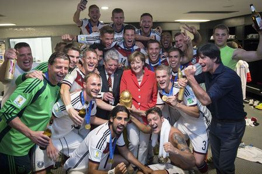

德國拿金盃 贏在板凳深度
新聞日期：2014-07-14

德國隊稱霸世足，總教練Joachim Low把功勞歸給前任教頭、現美國隊總教練「金色轟炸機」Jurgen Klinsmann。
「我們十年前啟動計畫，經過多年努力，這就是成果，」Low說，「這項計畫的啟動者，是Klinsmann。」
2004年德國隊在歐洲國家盃踢出難看成績，隨後Klinsmann接下兵符，並啟動長期培訓計畫。這項計畫後來由Low接手，培育出新一代「坦克軍團」。
如今「金色轟炸機」轉而執教美國隊，看到祖國封王，Klinsmann推特發文祝福：YES YES YES!!!Joachim Low你做到了!!!相當推崇阿根廷隊，但終究是最佳隊伍才能拿到今年世足冠軍！
相隔24年，德國隊再獲世足賽冠軍，「我們能在足球的故鄉、巴西，拿下這座冠軍，實在很光榮，」Low說，「之前我們累積了許多壓力，現在百感交集，一時之間難以了解發生了什麼，只知道喜樂將永遠流傳。」
比較特別的是，Low還感謝巴西球迷。雖然德國隊準決賽以7比1痛擊巴西，但地主球迷決賽時為德國隊加油。
「當我們大勝巴西隊後，這個國家陷入極大失望，但我們離場時，有數以千計的巴西球迷為我們鼓掌，人行道上也有德國國旗，」Low說，「巴西半了一次很棒的世足賽，充滿許多正面能量，這是我人生中一大光榮時刻。」